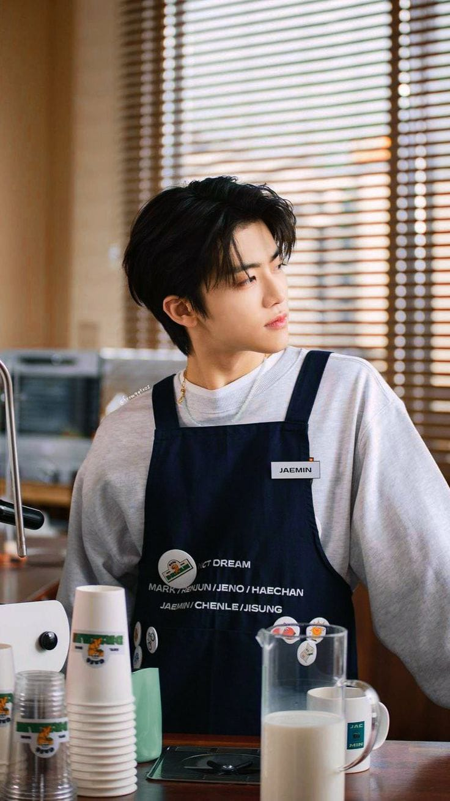

di _Jeda_ dulu aja
Cangkir Jeda
Pause dulu, Go on kemudian

di _Jeda_ dulu aja
Pause dulu, Go on kemudian

"Berhenti sejenak, nikmati setiap rasa. Sebab setiap perjalanan membutuhkan jeda, dan setiap jeda layak ditemani secangkir rasa."
"Terkadang dunia tidak berpihak padamu karena dunia tercipta tidak hanya untukmu."
-Jaemin Abhiyaksa, Owner Cangkir Jeda